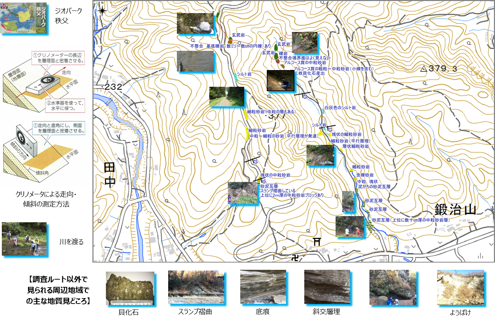
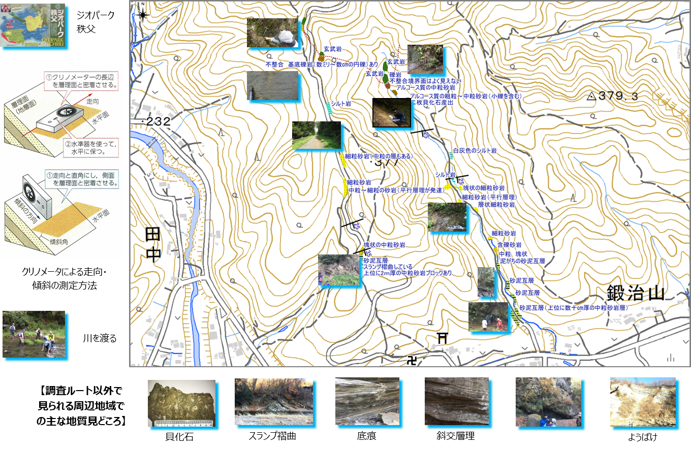

2-1. 調査の様子
調査範囲にある沢と林道の２つのルートを設定し、調査を行いました。 ルート沿いにある露頭を観察し、走向・傾斜が測れるところではクリノメータを使用して測定を行いました。 どちらのルートでも、南にゆるく傾斜した地層が見られました。また、北から南への岩相の変化も似ていて、この２つのルート間で地層をつなげることができそうです。
⇨「調査の様子」の写真が記載されたPDFを表示（またはダウンロード）するには、こちら をクリック

調査範囲にある沢と林道の２つのルートを設定し、調査を行いました。 ルート沿いにある露頭を観察し、走向・傾斜が測れるところではクリノメータを使用して測定を行いました。 どちらのルートでも、南にゆるく傾斜した地層が見られました。また、北から南への岩相の変化も似ていて、この２つのルート間で地層をつなげることができそうです。
⇨「調査の様子」の写真が記載されたPDFを表示（またはダウンロード）するには、こちら をクリック
